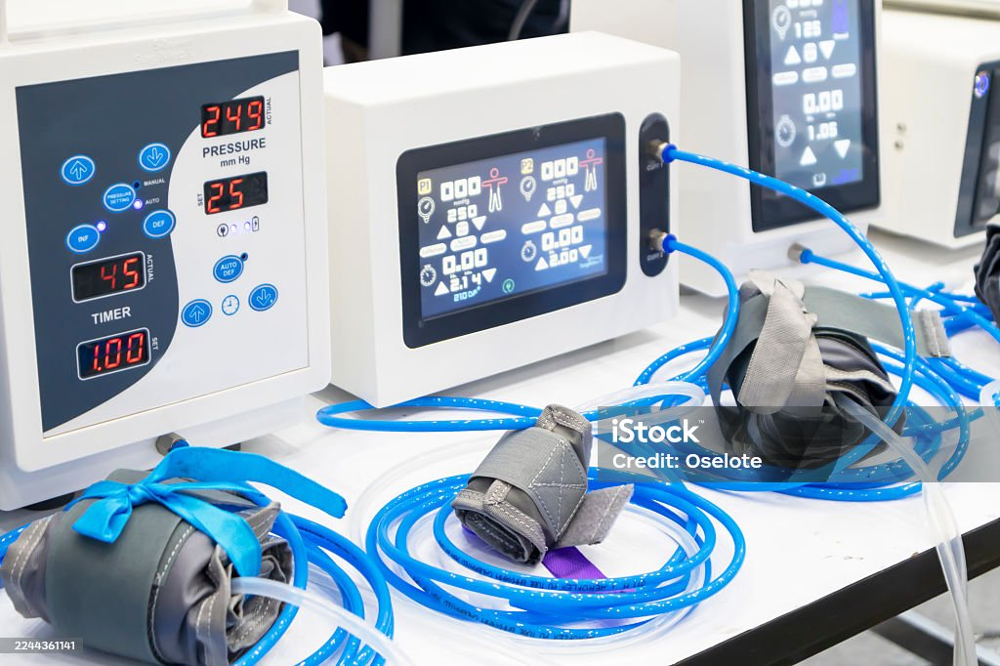

Deployment-ready
Fast setup with checklists, training plans, and clear handover.
Stackly provides device ecosystems that are easy to deploy, simple to train, and ready for clinical environments—from wards to labs and home care.

Fast setup with checklists, training plans, and clear handover.
Predictable maintenance schedules and spare parts planning.
Clear device documentation and specification summaries.
Helpdesk, on-site visits, and escalation when needed.
Loading…

Every Stackly device comes with essential features designed to support real clinical workflows.
Configurable thresholds and priority-based notifications for team awareness.
Built-in formats for EHR integration, audits, and compliance reporting.
Seamless operation without network, with auto-sync when reconnected.
You can mix and match devices from different families depending on how your hospital, clinic, or lab is set up.
Bedside and transport monitors that help teams watch vital signs clearly in ICUs, wards, and procedure rooms.
Devices that support lab workflows with guided prompts, QC reminders, and easy export of results.
Infusion and treatment devices that focus on accuracy, logs, and easy-to-read screens for teams and patients.
Simple kits for monitoring at home with instructions and layouts designed for families, not just clinicians.
Timelines depend on how many locations you have, but even smaller multi-department setups can usually be installed and trained within a few weeks.
Yes. Many customers start with a pilot unit or a single ward so they can see how the workflow feels before expanding.
In a real deployment, your dashboard would surface open tickets, status of replacements, and completed service visits for your devices.
Training can be planned for different staff groups—nurses, doctors, technicians—so each team knows how to use and care for the devices.